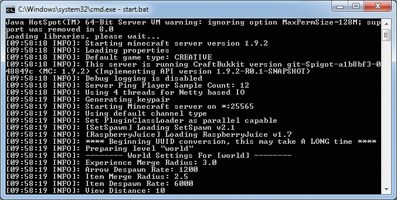
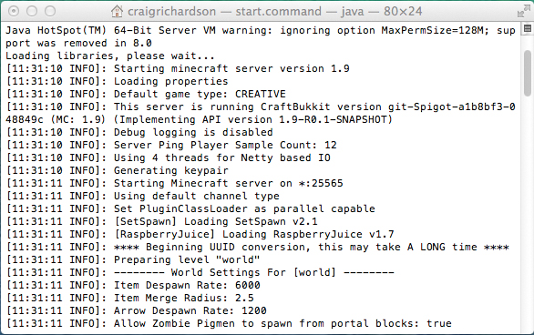

Elige la versión correcta de Minecraft
Para poder utilizar tu servidor Spigot, tu versión de Minecraft tiene que coincidir exactamente con la versión de Spigot. Pero continuamente salen nuevas versiones de Minecraft, así que si actualizas Minecraft, Spigot ya no funcionará con la nueva versión. Para que tus versiones de Spigot y Minecraft coincidan, puedes configurar un perfil.
Cuando configuras un perfil, le dices a Minecraft que sólo quieres utilizar la versión del juego que funcionará con la versión del servidor que estás utilizando. En otras palabras, un perfil te permite seguir utilizando el mismo servidor aunque salgan versiones más nuevas de Minecraft.
Empecemos.
Para Windows
Antes de crear tu perfil, tienes que averiguar qué versión del servidor estás utilizando. Sigue estos pasos para hacerlo:
En la carpeta Herramientas de Min ecraft, abre el archivo Start_Server. Aparecerá una ventana y comenzará a configurar el servidor.
Una vez terminada la configuración, desplázate hasta la parte superior del texto de la ventana.
Cerca de la parte superior (alrededor de la tercera o cuarta línea), deberías ver un texto que dice Iniciando servidor minecraft versión x.x.x. Por ejemplo, en la Figura A-1 la versión del servidor es 1.9.2.

Figura A-1: La versión de este servidor es 1.9.2.
Anota el número de versión que aparece en tu pantalla.
Ahora que sabes qué versión del servidor estás utilizando, puedes configurar el perfil del juego con estos pasos:
Abre el lanzador de Minecraft pero no hagas clic en Iniciar partida.
En la esquina inferior izquierda del lanzador de Minecraft, haz clic en el botón Nuevo perfil.
En el campo Nombre de perfil, escribe Aprende a programar con Minecraft.
Más abajo en la página, hay un menú desplegable llamado Usar versión. En el desplegable Usar versión, selecciona la versión del servidor que estás utilizando. Por ejemplo, en la Figura A-2 estoy utilizando la versión 1.9.2.
Figura A-2: He creado un perfil llamado Aprende a programar con Minecraft que utiliza la versión 1.9.2.
Una vez hecho esto, haz clic en el botón Guardar perfil. El perfil ya está configurado.
A partir de ahora, cada vez que quieras utilizar Minecraft con este libro, selecciona el perfil Aprende a programar con Minecraft en el menú desplegable de la esquina inferior izquierda del lanzador de Minecraft.
Puedes volver a la última versión de Minecraft en cualquier momento seleccionando la opción (por defecto ) en el menú desplegable.
Para Mac
Antes de crear tu perfil, tienes que averiguar qué versión del servidor estás utilizando. Sigue estos pasos para hacerlo ahora:
En la carpeta Herramientas de Minecraft, abre el archivo Start_Server. Aparecerá una ventana que empezará a configurar el servidor.
Una vez finalizada la configuración, desplázate hasta la parte superior del texto de la ventana.
Cerca de la parte superior (alrededor de la tercera o cuarta línea), deberías ver un texto que dice Iniciando servidor minecraft versión x.x.x. Por ejemplo, en la Figura A-3 la versión del servidor es 1.9.
Anota el número de versión que aparece en tu pantalla.

Figura A-3: La versión de este servidor es la 1.9.
Ahora que sabes qué versión del servidor estás utilizando, puedes configurar el perfil del juego con estos pasos:
Abre el lanzador de Minecraft, pero no hagas clic en Iniciar partida.
En la esquina inferior izquierda del lanzador de Minecraft, haz clic en el botón Nuevo perfil.
En el campo Nombre de perfil, escribe Aprende a programar con Minecraft.
Más abajo en la página, hay un menú desplegable llamado Usar versión. En el desplegable Usar versión, selecciona la versión del servidor que estás utilizando. Por ejemplo, en la Figura A-4 estoy utilizando la versión 1.9.
Figura A-4: He creado un perfil llamado Aprende a programar con Minecraft que utiliza la versión 1.9.
Una vez hecho esto, haz clic en el botón Guardar perfil. El perfil ya está configurado.
A partir de ahora, cada vez que quieras utilizar Minecraft con este libro, selecciona el perfil Aprende a programar con Minecraft en el menú desplegable de la esquina inferior izquierda del lanzador de Minecraft.
Puedes volver a la última versión de Minecraft en cualquier momento seleccionando la opción (por defecto ) en el menú desplegable.